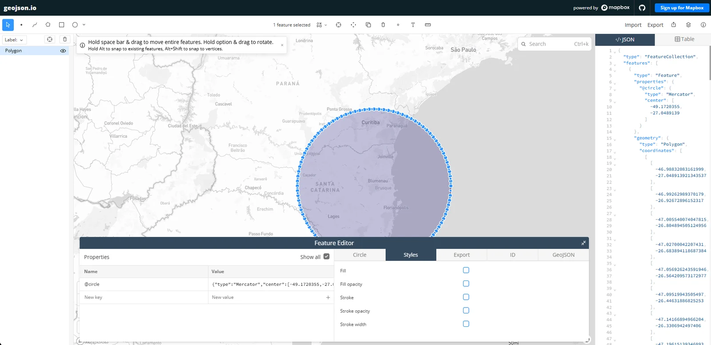
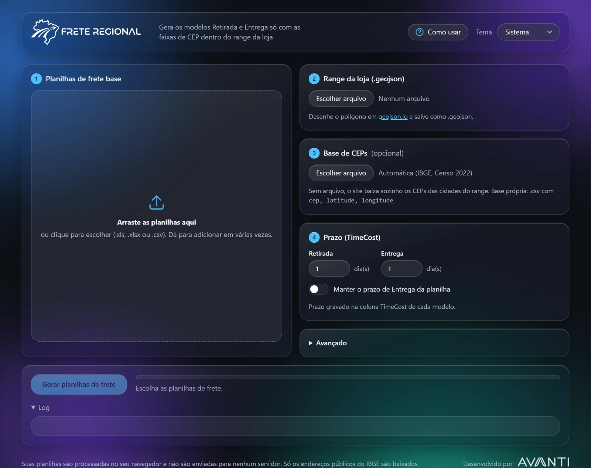
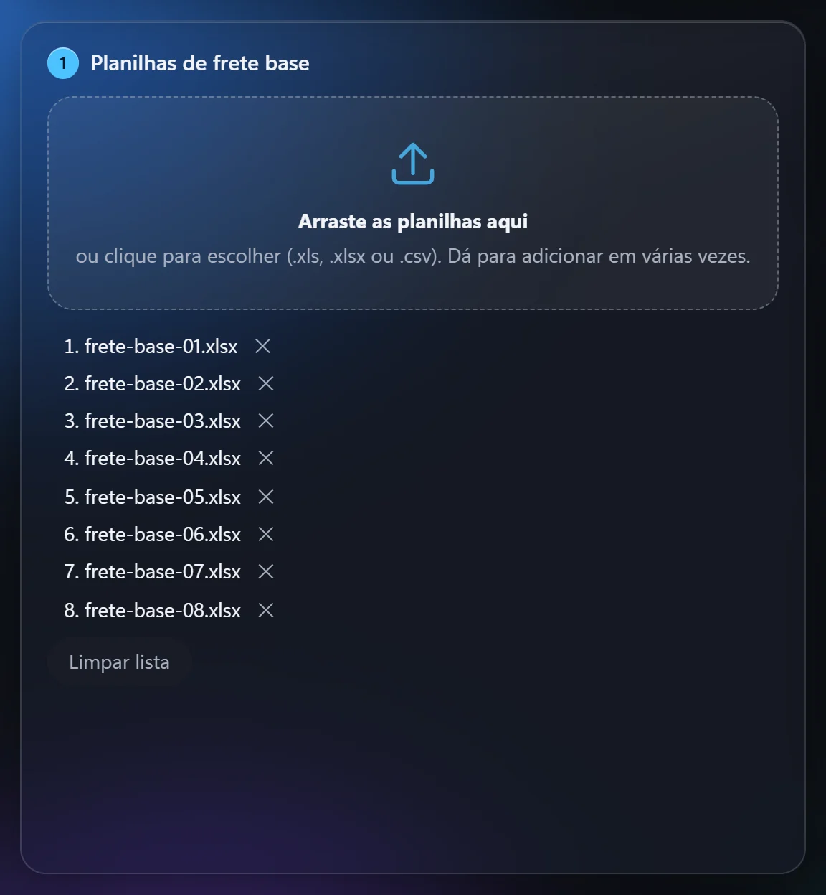
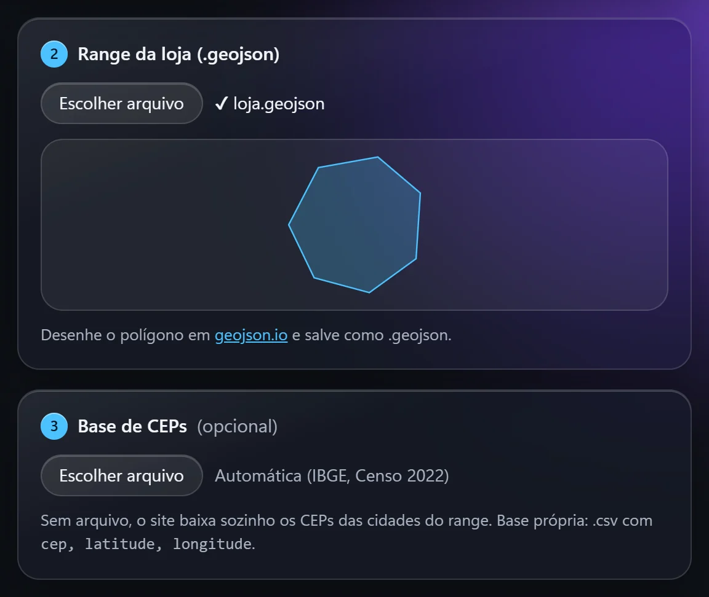
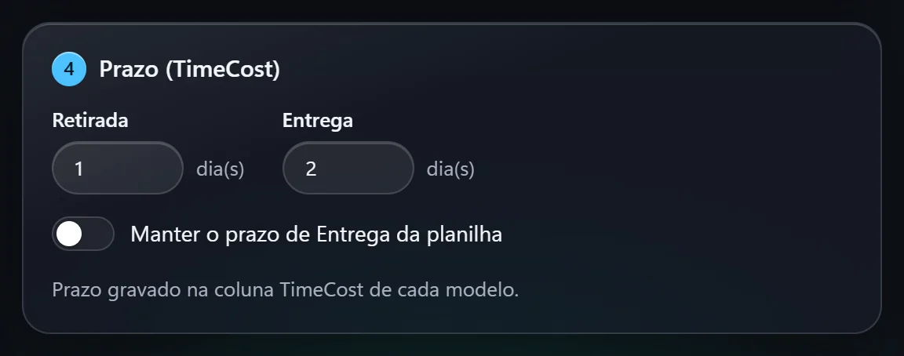
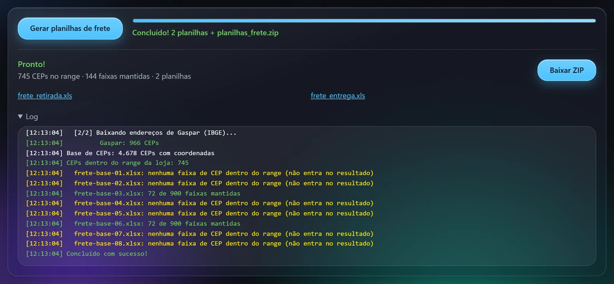

O Frete Regional pega as planilhas de frete base da VTEX e o range da loja e gera duas planilhas prontas para subir: uma de Retirada e uma de Entrega, só com as faixas de CEP que caem dentro do range.
Não precisa instalar nada, e as planilhas não saem do seu navegador. São 5 passos, cerca de 5 minutos.
1 Desenhar o range da loja
O range é a área que a loja atende, salva como um arquivo .geojson. Se você já tem o arquivo, pule para o passo 2.
- Abra o geojson.io.
- Na busca do mapa, vá até a região da loja.
- Na barra de cima, escolha a ferramenta de desenho: polígono (clique ponto a ponto e feche no primeiro ponto), retângulo ou círculo (clique no centro e arraste).
- Confira no painel JSON, à direita, se apareceu um
"type": "Polygon". - Clique em Export → GeoJSON e salve o arquivo (ex.:
loja.geojson).

O desenho pode ter várias áreas e até buracos. O site só olha os CEPs que caem dentro delas.
2 Adicionar as planilhas de frete base
Abra o Frete Regional. Ele tem 4 cards numerados e um botão para gerar no final.

- No card 1 Planilhas de frete base, arraste as planilhas para a área tracejada, ou clique nela para escolher os arquivos.
- Aceita
.xls,.xlsxe.csv. Não há limite de quantidade, e dá para adicionar em várias vezes. - Para tirar uma planilha, clique no ✕ ao lado do nome. Limpar lista tira todas.

3 Escolher o range da loja
- No card 2 Range da loja, clique em Escolher arquivo e selecione o
.geojsondo passo 1. - O nome do arquivo aparece com um ✔ e, logo abaixo, uma prévia do desenho para você conferir o formato. Se aparecer "Arquivo inválido", refaça o export no geojson.io.
- O card 3 Base de CEPs é opcional: deixe em Automática (IBGE, Censo 2022). Só use uma base própria se tiver um
.csvcom as colunascep, latitude, longitude.

4 Definir o prazo (TimeCost)
O prazo vai para a coluna TimeCost das planilhas geradas, em dias inteiros de 0 a 365.
- Retirada: digite quantos dias a retirada leva (padrão 1).
- Entrega: digite quantos dias a entrega leva (padrão 1).
- Para usar o prazo que já está na planilha, ligue Manter o prazo de Entrega da planilha. O campo de Entrega fica apagado e cada faixa mantém o prazo original.

O formato da planilha é respeitado: se o TimeCost estava como 20.00:00:00, 3 dias viram 3.00:00:00. O site lembra os últimos valores usados neste navegador.
5 Gerar e baixar
- Clique em Gerar planilhas de frete. O botão só libera quando há planilhas, um range e prazos válidos.
- Acompanhe a barra de progresso e o Log. Com 8 planilhas grandes, leva cerca de 1 a 2 minutos.
- Quando aparecer Pronto!, clique em Baixar ZIP para levar tudo de uma vez, ou clique em
frete_retirada.xlsefrete_entrega.xlspara baixar cada uma.

Como ler o log
- Neutro: informação (prazo usado, municípios do range, CEPs encontrados).
- Verde: a planilha teve faixas dentro do range (ex.: "72 de 900 faixas mantidas").
- Amarelo: a planilha não tem nenhuma faixa no range e fica de fora do resultado. É normal quando ela cobre outra região.
- Vermelho: erro. A mensagem diz o que corrigir.
O que cada planilha gerada tem
As duas juntam as faixas de todas as planilhas base e mantêm só as que têm pelo menos um CEP dentro do range.
| Coluna | frete_retirada.xls | frete_entrega.xls |
|---|---|---|
| AbsoluteMoneyCost | 0 | Original da planilha |
| PricePercent | 0 | Original da planilha |
| PriceByExtraWeight | 0 | Original da planilha |
| TimeCost | Dias de Retirada (passo 4) | Dias de Entrega, ou original se o interruptor estiver ligado |
| Demais colunas | Iguais à planilha | Iguais à planilha |
Dúvidas frequentes
A primeira vez numa região demorou bastante. É normal?
Sim. Na primeira vez o site baixa do IBGE os endereços de cada cidade do range. Depois fica salvo no navegador e as próximas vezes são rápidas. Precisa de internet nessa primeira vez.
Saiu frete_entrega_parte1.xls, parte2… Por quê?
O formato .xls aceita até 65.000 linhas. Quando passa disso, o site divide em partes, e Retirada e Entrega ficam com o mesmo número de partes. Suba todas.
Todas as planilhas ficaram amarelas no log.
Nenhuma faixa caiu no range. Confira se o .geojson é o da loja certa e se o desenho cobre a região.
O site não mostra a última mudança.
Aperte Ctrl+F5 para recarregar sem cache.
Minhas planilhas vão para algum servidor?
Não. Tudo roda no seu navegador. Só os endereços públicos do IBGE são baixados.
Os CEPs salvos ficaram desatualizados.
No app, abra Avançado e clique em Apagar CEPs salvos. A próxima geração baixa tudo de novo do IBGE.